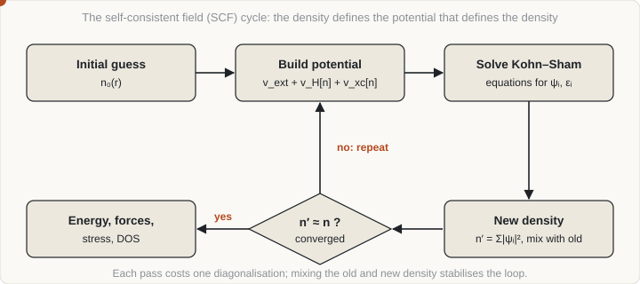

Curriculum/Computational methodsCMS 501
Density functional theory in practice
Density functional theory (DFT) computes the energy and electronic structure of a solid from its atomic positions alone. It is the workhorse behind most first-principles materials data: formation energies, elastic constants, defect energies, band structures and the training sets for machine-learned potentials.
- Reading time
- about 13 min
- Builds on
- CMS 401: Introduction
MSE 201: Crystals and cells
PHYS 100: Physics review
MATH 202: Linear algebra II - Leads to
- CMS 507: Machine learning
- Level
- Graduate: simulation methods
- Explain the Kohn–Sham idea and the role of the exchange–correlation functional.
- Choose among common functionals and know the typical errors of each.
- List the numerical parameters that must be converged and how to test them.
- Describe how to obtain lattice parameters, elastic constants, defect energies, barriers and phonons from DFT.
1. The electronic structure problem#
The nuclei of a solid are about 2000 times heavier than electrons, so electrons respond almost instantly to nuclear motion. In the Born–Oppenheimer approximation the nuclei are fixed and the electrons are solved for each arrangement, giving an energy surface E(R1, …, RN) on which the nuclei move; its negative gradients are the forces. This surface is what every classical interatomic potential tries to approximate.
The electrons obey the many-body Schrödinger equation, whose wavefunction depends on 3 coordinates per electron. Exact solutions are impossible beyond a few electrons. DFT replaces the wavefunction with the electron density n(r), a function of only three coordinates no matter how many electrons there are.
2. The Kohn–Sham scheme#
The Hohenberg–Kohn theorems (1964) prove that the ground-state energy is a functional of the density and is minimised by the true density. They do not say what the functional is. Kohn and Sham (1965) made it usable by mapping the interacting system onto fictitious non-interacting electrons that have the same density, and splitting the energy as
E[n] = Ts[n] + ∫ vext(r) n(r) dr + EH[n] + Exc[n]The terms are, in order: the kinetic energy of the non-interacting electrons, the energy in the potential of the nuclei, the classical electrostatic (Hartree) energy of the density with itself, and the exchange–correlation energy Exc, which contains the quantum exchange of identical electrons, their correlated motion, and the correction to the kinetic energy. Minimising E[n] gives one-electron equations:
[ −½∇² + veff(r) ] ψi(r) = εi ψi(r), veff = vext + vH[n] + vxc[n], n(r) = Σocc |ψi(r)|²(in atomic units). The orbitals ψi and eigenvalues εi are mathematical devices to build the density; only the total energy and the density have exact meaning. Reading band structures from the Kohn–Sham eigenvalues is a useful but approximate practice.
3. Exchange–correlation functionals#
Everything not computed exactly is in Exc, which must be approximated. The choice of approximation is the main modelling decision in a DFT calculation, climbing a ladder of increasing ingredients and cost.
| Level | Depends on | Examples | Typical behaviour |
|---|---|---|---|
| Local density (LDA) | Density at a point | Ceperley–Alder / PZ | Lattice parameters too small by 1–3%; bonds too strong; wrong ground state for iron |
| Generalised gradient (GGA) | Density and its gradient | PBE, PBEsol, PW91 | PBE lattice parameters 1–2% too large; PBEsol closer to experiment for solids; correct bcc ferromagnetic Fe; band gaps too small |
| Meta-GGA | Adds kinetic-energy density | SCAN, r2SCAN, TPSS | Better energetics and some correlated systems at modest extra cost |
| Hybrid | Mixes in a fraction of exact exchange | PBE0, HSE06 | Much better band gaps and localised-state description; 10 to 100 times the cost of GGA in plane-wave codes |
| Beyond | Many-body perturbation | GW, random-phase approximation | Quasiparticle band gaps, van der Waals; very expensive |
Common corrections
- Spin polarisation. Magnetic materials such as Fe, Co, Ni and many oxides need separate spin-up and spin-down densities. The starting magnetic moments and the magnetic configuration (ferromagnetic, antiferromagnetic) must be chosen deliberately, and different starting guesses can converge to different local solutions.
- DFT+U. An on-site Hubbard term corrects over-delocalisation of localised d and f electrons (transition-metal oxides, rare earths). U is a parameter and results can depend on it.
- Dispersion. Standard functionals miss van der Waals attraction. Empirical corrections (the “D3” scheme) or non-local functionals (vdW-DF) are used for layered materials, molecular crystals and adsorption.
Practical rules: PBE is the default for metals and alloys. For energy differences between similar structures the errors often cancel, so DFT is far more reliable for relative energies than for absolute ones. Formation energies from GGA typically carry errors of order 0.1 eV per atom, which is large compared with the energy differences that separate competing phases, so conclusions about borderline stability need care. Band gaps from semi-local functionals are consistently underestimated.
4. Basis sets and pseudopotentials#
The Kohn–Sham orbitals must be expanded in a finite basis. In a crystal the potential is periodic, and Bloch’s theorem says each orbital has the form ψnk(r) = eik·r unk(r), with u periodic and k a point in the Brillouin zone. Two families of basis dominate:
- Plane waves (VASP, Quantum ESPRESSO, ABINIT, CASTEP) expand u in Fourier components exp(iG·r) of the reciprocal lattice. The basis is controlled by one number, the cutoff energy: all plane waves with ½|k + G|² ≤ Ecut are included. It is systematic: raising Ecut always improves the basis.
- Localised orbitals (Gaussians in CP2K and Gaussian; numerical atomic orbitals in SIESTA and FHI-aims) are efficient for large and molecular systems and offer linear-scaling options, but need care over basis-set completeness.
Core electrons are chemically inert but have rapidly oscillating wavefunctions that would need an enormous plane-wave basis. Pseudopotentials (and the closely related projector-augmented-wave, PAW, method) replace the nucleus and core electrons by an effective potential for the valence electrons, smooth inside a core radius. Choices include norm-conserving, ultrasoft and PAW datasets. Semi-core states (for example 3p in transition metals) should be included in the valence set when they influence the property. All-electron methods (such as FLAPW) avoid pseudopotentials at higher cost and are used as a reference.
5. Sampling reciprocal space#
Many quantities (the density, the total energy) are integrals over the Brillouin zone, evaluated as a sum over a finite set of k-points. The standard choice is a uniform Monkhorst–Pack grid, reduced by symmetry. Insulators converge with a few points because their occupation is smooth. Metals have a sharp Fermi surface, so they need dense grids and a smearing function that smooths the occupation numbers: Gaussian, Methfessel–Paxton, Marzari–Vanderbilt (cold smearing) or Fermi–Dirac. Smearing introduces a small error that depends on the width; the tetrahedron method with Blöchl corrections is used for accurate densities of states.
A useful rule: k-point density should scale inversely with cell size. A 4-atom cell may need a 12×12×12 grid where a 256-atom supercell of the same crystal converges with 2×2×2 or 3×3×3.
6. The self-consistency cycle#
The Kohn–Sham equations are non-linear: the potential depends on the density, which depends on the orbitals, which depend on the potential. They are solved by iteration. Guess a density, build the potential, solve for orbitals, form a new density, and repeat until input and output densities agree.

Simply replacing the old density with the new one oscillates or diverges, so a mixing scheme (Pulay/DIIS or Broyden) combines the history of densities. Convergence is declared when the change in energy or density drops below a tolerance (for example 10−6 eV in VASP for routine work, tighter for phonons). Slow or failed convergence usually has a physical cause: a metallic system with too little smearing, an incorrect magnetic starting guess, a nearly degenerate state, or a bad structure. Once the electronic problem is converged, forces and stress follow from the Hellmann–Feynman theorem, and the structure can be relaxed by moving atoms (and the cell) downhill in energy.
7. Convergence#
Every numerical parameter must be tested, because a result that has not converged is a result of the parameters, not of the material. The method is the same each time: vary one parameter while holding the others fixed and watch the quantity of interest (not just the total energy).
| Parameter | What it controls | Typical test | Comment |
|---|---|---|---|
| Plane-wave cutoff | Basis completeness | Raise until energy differences change by under about 1 meV per atom | Stress converges more slowly than energy; relaxing a cell needs a higher cutoff or a fixed-basis re-run |
| k-point grid | Brillouin-zone integration | Increase grid density until the property changes by under tolerance | Metals need more than insulators |
| Smearing width | Fermi-surface treatment | Reduce width while increasing k density | Report the scheme and width used |
| Supercell size | Defect–image interaction | Repeat in larger cells; extrapolate | See supercells and periodic boundaries |
| Vacuum thickness, slab thickness | Surface and interface models | Increase until the surface energy stops changing | Both matter |
| Force and SCF tolerances | Relaxation accuracy | Tighten until structure and energy stop changing | Typical force tolerance 0.01 eV/Å; phonons need much smaller |
When comparing energies of different structures, use the same cutoff, pseudopotentials and equivalent k-point density in all of them, so that errors cancel. Test with differences, not absolute energies.
8. What to compute#
Structure and equation of state
Compute the total energy at several volumes (relaxing atoms at each), fit an equation of state, and read off the equilibrium volume V0, the bulk modulus B0 = −V(∂p/∂V) and its pressure derivative. The Birch–Murnaghan form is the standard fit:
E(V) = E0 + (9V0B0/16) { [(V0/V)2/3 − 1]3 B′0 + [(V0/V)2/3 − 1]2 [6 − 4(V0/V)2/3] }Formation energies and phase stability
The formation energy per atom of a compound AxBy relative to the elements in their ground-state structures is
Ef = [ E(AxBy) − x E(A) − y E(B) ] / (x + y)A negative value means the compound is stable against decomposition into the elements; stability against all competing phases requires comparing with the lowest-energy combination, the convex hull. DFT formation energies are the input for many CALPHAD assessments.
Elastic constants
Apply small strains ε, relax atoms, and fit the stress σ = Cε. For a cubic crystal there are three independent constants C11, C12, C44, the bulk modulus is B = (C11 + 2C12)/3, mechanical stability requires C11 − C12 > 0, C11 + 2C12 > 0 and C44 > 0, and the Zener anisotropy ratio is A = 2C44/(C11 − C12). Polycrystalline moduli follow by averaging (Voigt, Reuss, Hill).
Defects, interfaces and barriers
The vacancy formation energy in a supercell of N atoms is Efvac = E(N−1) − [(N−1)/N] E(N), and solute, interstitial and surface energies follow the same logic of subtracting reference energies. Energy barriers for atomic hops come from the nudged elastic band method, which relaxes a chain of images between the initial and final states while keeping them evenly spaced; the climbing-image variant (Henkelman et al.) converges the highest image onto the saddle point. For vacancy diffusion the activation energy is Q = Ef + Em (formation plus migration), which compares directly with experiment.
Vibrations and temperature
Phonon frequencies are obtained by displacing atoms in a supercell and recording forces (finite displacements, programs such as Phonopy) or by perturbation theory. The phonon spectrum gives the vibrational free energy in the harmonic or quasi-harmonic approximation (see statistical mechanics), thermal expansion, heat capacity and the stability of a structure: an imaginary frequency means the structure is dynamically unstable. Ab initio molecular dynamics propagates the atoms using DFT forces directly, capturing anharmonicity but limited to a few hundred atoms and tens of picoseconds.
9. Cost and accuracy#
With conventional diagonalisation, DFT cost grows roughly as the cube of the number of atoms. Practical limits are hundreds of atoms for routine work and a few thousand with large computing resources; hybrid functionals and large k-grids make the calculation heavier by an order of magnitude or more. Linear-scaling and GPU-accelerated implementations extend the range.
An important finding for reproducibility: a large community comparison of about 40 code and pseudopotential combinations on 71 elemental crystals found that modern implementations agree closely when the same functional is used, so the largest source of disagreement in a published DFT result is usually the functional and the setup, not the code (Lejaeghere et al., 2016).
Known weaknesses to keep in mind: semi-local functionals under-bind and over-delocalise in strongly correlated systems; energy barriers can be underestimated; and DFT at 0 K ignores finite-temperature entropy unless added separately.
10. Inputs in common codes#
The parameters above appear under different names in each program. The table maps a few widely used ones.
| Concept | VASP | Quantum ESPRESSO |
|---|---|---|
| Cutoff energy | ENCUT (eV) | ecutwfc (Ry), ecutrho |
| k-point grid | KPOINTS file | K_POINTS automatic |
| Smearing | ISMEAR, SIGMA | occupations, smearing, degauss |
| SCF tolerance | EDIFF (eV) | conv_thr (Ry) |
| Spin polarisation | ISPIN = 2, MAGMOM | nspin = 2, starting_magnetization |
| Relaxation | IBRION, ISIF, NSW, EDIFFG | calculation = 'relax' or 'vc-relax' |
Units differ (eV against Rydberg), as do conventions for the functional and pseudopotential: record these exactly, since they are part of the result.
- DFT solves for the electron density through the Kohn-Sham equations; only the exchange-correlation energy is approximated.
- The functional (LDA, GGA, meta-GGA, hybrid, plus U, van der Waals) sets the typical errors. Relative energies are more reliable than absolute ones.
- Converge the cutoff, k-points, smearing and cell size before trusting any number.
- Standard outputs are lattice constants, elastic constants, formation and defect energies, barriers by nudged elastic band, and phonons.
- Cost grows roughly as N cubed, which limits cells to hundreds or a few thousand atoms, and results are for 0 K unless extended.
11. Check your understanding#
Your computed vacancy formation energy changes from 1.1 eV to 1.5 eV when you double the supercell. What does that suggest?
The small cell was not converged: the vacancy was interacting with its periodic images. Keep enlarging until the value stabilises, or check convergence against both cell size and k-points, since both are changing in practice.
Why must two structures being compared be computed with the same cutoff and equivalent k-point density?
Basis and sampling errors are systematic and partly cancel only when they are the same in both calculations. Using different settings leaves a difference in numerical error that can exceed the physical energy difference.
A phonon calculation returns an imaginary frequency. What does it mean?
The structure is at a saddle point rather than a minimum of the energy surface: it is dynamically unstable and would distort spontaneously. It can also indicate an unconverged calculation, so test the convergence before drawing a physical conclusion.
12. References and further reading#
- Sholl, D. S. and Steckel, J. A., Density Functional Theory: A Practical Introduction, Wiley (2009).
- Martin, R. M., Electronic Structure: Basic Theory and Practical Methods, Cambridge University Press (2004).
- Hohenberg, P. and Kohn, W., Phys. Rev. 136, B864 (1964); Kohn, W. and Sham, L. J., Phys. Rev. 140, A1133 (1965).
- Perdew, J. P., Burke, K. and Ernzerhof, M., Phys. Rev. Lett. 77, 3865 (1996).
- Sun, J., Ruzsinszky, A. and Perdew, J. P., Strongly constrained and appropriately normed semilocal density functional, Phys. Rev. Lett. 115, 036402 (2015).
- Heyd, J., Scuseria, G. E. and Ernzerhof, M., Hybrid functionals based on a screened Coulomb potential, J. Chem. Phys. 118, 8207 (2003).
- Blöchl, P. E., Projector augmented-wave method, Phys. Rev. B 50, 17953 (1994).
- Monkhorst, H. J. and Pack, J. D., Special points for Brillouin-zone integrations, Phys. Rev. B 13, 5188 (1976).
- Kresse, G. and Furthmüller, J., Efficient iterative schemes for ab initio total-energy calculations using a plane-wave basis set, Phys. Rev. B 54, 11169 (1996).
- Giannozzi, P. et al., QUANTUM ESPRESSO, J. Phys.: Condens. Matter 21, 395502 (2009).
- Henkelman, G., Uberuaga, B. P. and Jónsson, H., A climbing image nudged elastic band method, J. Chem. Phys. 113, 9901 (2000).
- Togo, A. and Tanaka, I., First principles phonon calculations in materials science, Scr. Mater. 108, 1 (2015).
- Lejaeghere, K. et al., Reproducibility in density functional theory calculations of solids, Science 351, aad3000 (2016).